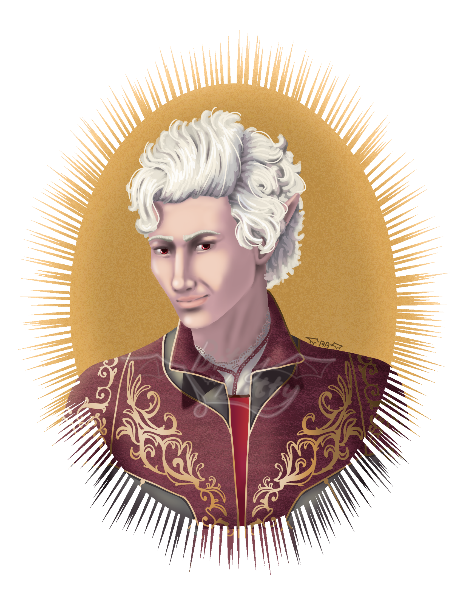
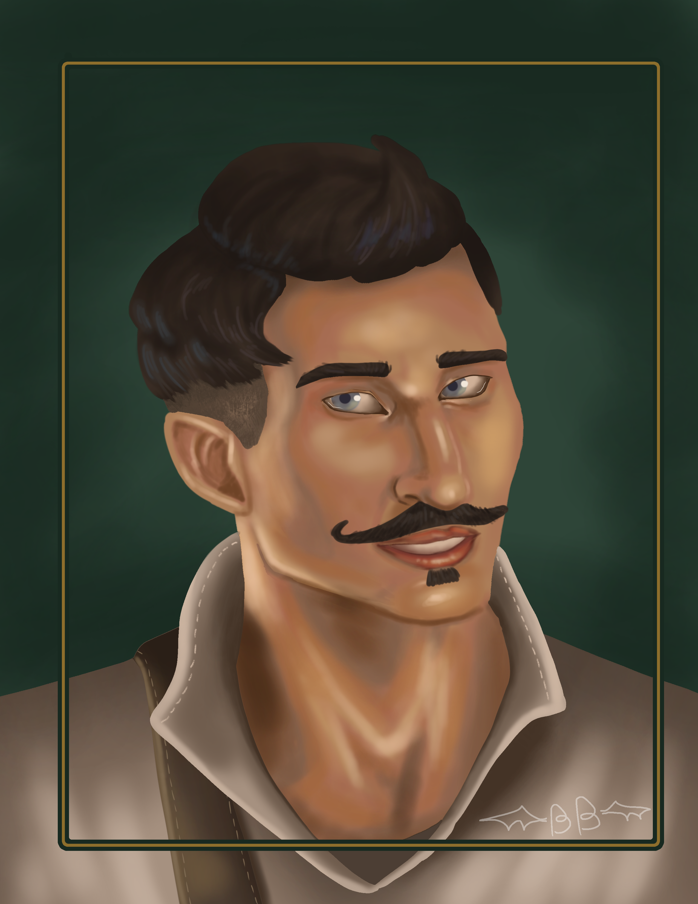
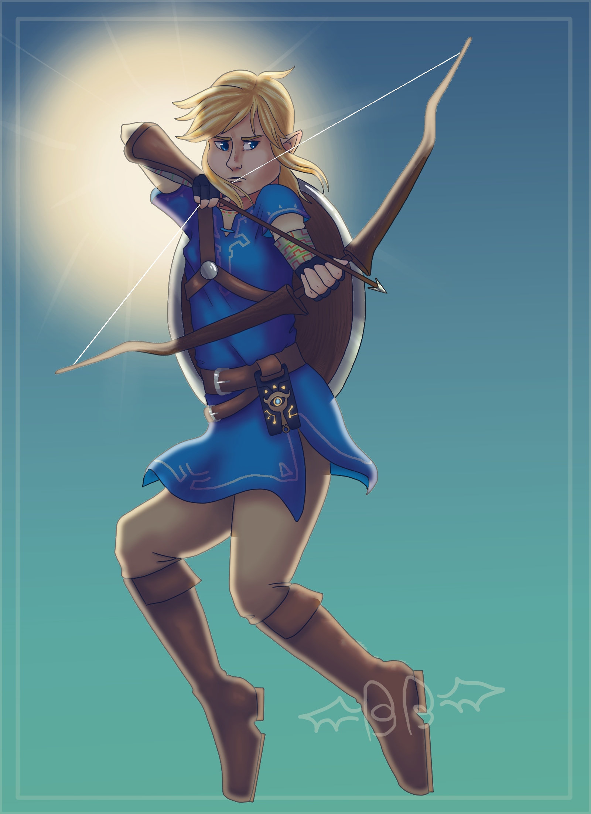
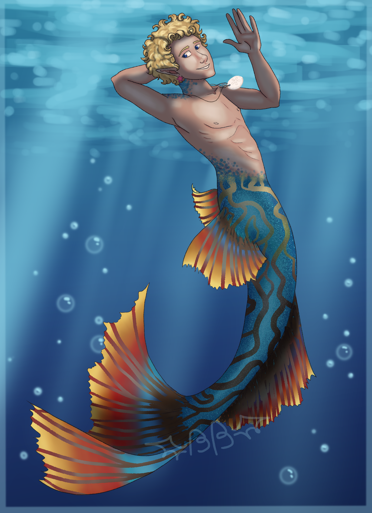
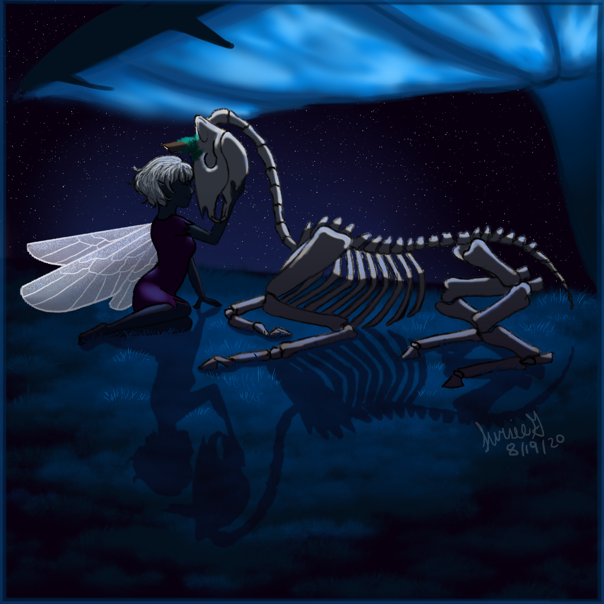
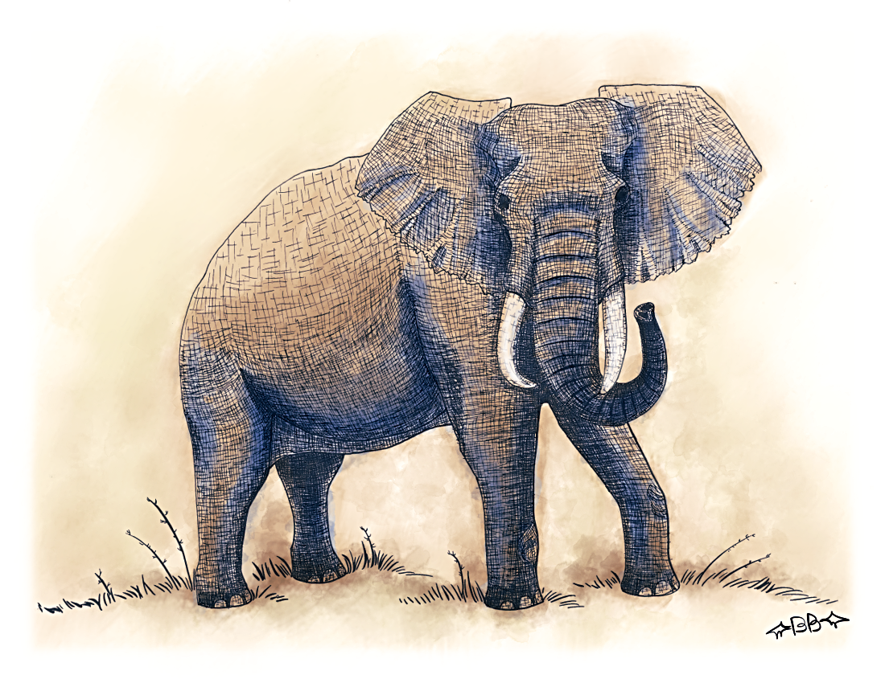

This is a portrait of my OC, Queen Alayne Tenepri of the Vampire Nation of Malatia, mother to Erik and Riccardo Tenepri.

I'm a sucker for vampires who get to walk in daylight again or for the first time, and Astarion fills that character need in me! He was fun to draw!

Dorian Paavus is my favorite character from Dragon Age. Drawing him was my homage to how much I adore him!

Stolas from Helluva Boss is an absolute precious character.

Prince Eirikr "Erik" Jon Tenepri is an OC of mine and probably my oldest OC. He's a highly skilled soldier, and protector of his family.

I've very much enjoyed playing Breath of the Wild and Tears of the Kingdom! Of course I had to draw Link!

I drew this piece for Mermay 2023. This is Leonardo Evrard Dupont as a merman. True to his usual style, he's very colorful!

A piece of my OC Nyx, a necromancer fairy, and her newly animated companion, Moss.

I drew this in Spring 2022 in an art class and it was featured in the student art gallery that semester. I still love this piece.